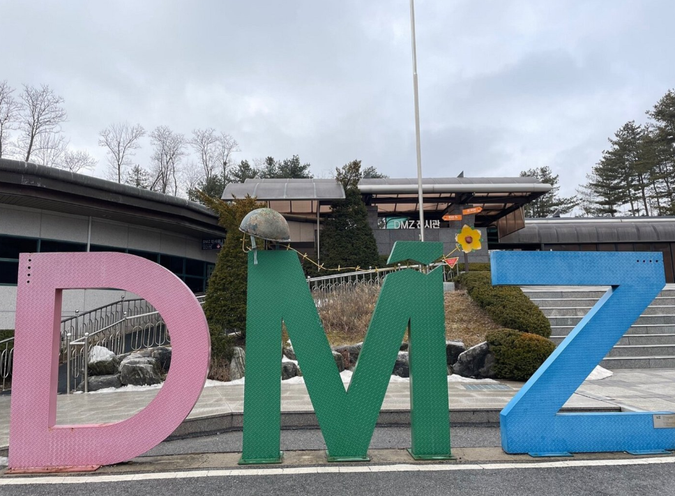
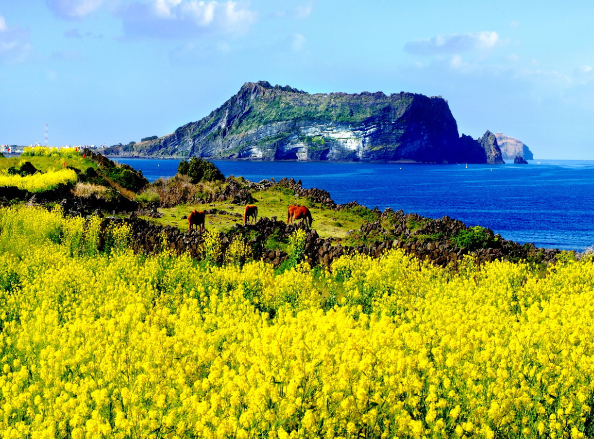

"Gwanghwamun" - Gwanghwamun is a representative cultural heritage of Seoul, and was built in 1395 and burned down after the Imjin War, but was rebuilt in 2010 and has continued to this day. Gwanghwamun consists of three arched gates, the central gate was used by the king, and the other two were used by the crown prince and royal officials. The high granite walls of the gate serve as a stepping stone to the wooden gate tower overlooking the city. Gwanghwamun is a beautiful cultural heritage where you can feel Korean culture and art at once.

"Doggung Palace and Wolji Pond" - Doggung Palace and Wolji Pond are placed in Gyeongju and it is a historic palace where the separate palace of Unified Silla was located during the North-South Korean period. It is a night-view attraction in Gyeongju, and the pond where the moon shines is an impressive place.It is a place where you can feel the beauty of Korea's nature and traditional hanok.
"DMZ" - The DMZ is an area that cannot be harmed by mobilizing military force and stretches 2km from the border to the south and north, respectively. If you apply for the DMZ tour, you can also see the third tunnel that North Korea made, the Unification Observatory where you can see North Korea, and a museum containing North and South Korea's war history.

"Haeundae" - Haeundae is a representative beach in Busan. Haeundae Beach boasts a wide white sandy beach and a beautiful coastline, and has the best conditions for the beach with shallow water depth and calm waves. Haeundae Beach is the first place that comes to mind when people think of Busan, so it is a representative attraction of Busan. In particular, it is famous for its modern and sophisticated beach with large and small buildings and luxury hotels around the coastline, so it is crowded with young heat all year round as well as the summer vacation season and is well known to foreign tourists.
"Udo Island" - Udo Island is one of the islands on Jeju Island. Sea cliffs have developed on all coasts except the southern coast and Takjinpo Port in the northeast, and there is only Soemori Oreum, a parasitic volcano of Hallasan Mountain, and the entire island is lava, and it is a wide and fertile flat land within 30m in altitude. The main agricultural products are sweet potatoes, barley, and garlic, and livestock breeding is also active. Mackerel, hairtail, and abalone are caught a lot in the nearby waters. You can feel and experience different scenery and nature from Jeju Island.